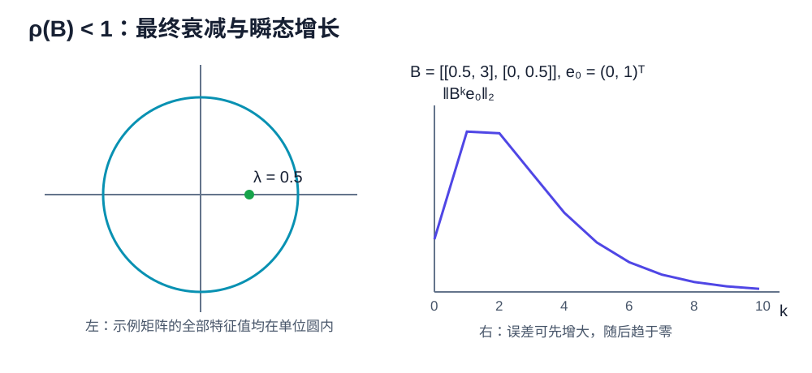

Linear Iterations & Power Method
线性迭代的核心不是“多算几步”，而是从更新式提取误差传播矩阵（error propagation matrix），并判断它的幂是否趋于零。本章给出完整充要条件，然后推导雅可比方法（Jacobi）、高斯－赛德尔方法（Gauss–Seidel）、理查森迭代（Richardson）与幂法（power method）。
标量线性迭代
先考虑
若 \(a\ne1\)，固定点为 \(x^*=c/(1-a)\)。令 \(e_k=x_k-x^*\)，则
命题。 标量迭代对任意初值收敛到固定点，当且仅当 \(|a|<1\)。
证明
若 \(|a|<1\)，则 \(a^k\to0\)，所以 \(e_k=a^ke_0\to0\)。反过来，若迭代对任意初值收敛，取 \(e_0\ne0\)，便必须有 \(a^ke_0\to0\)，即 \(a^k\to0\)，这要求 \(|a|<1\)。
当 \(a<0\) 时误差交替变号，但只要 \(|a|<1\)，其绝对值仍趋于零。
定常矩阵迭代
考虑
若存在固定点 \(x^*\)，则 \((I-B)x^*=c\)。相减得到
所以“对任意初值收敛到同一个固定点”等价于 \(B^k\to0\)。
谱半径收敛判据

定理。 对方阵 \(B\)，以下命题等价：
- \(B^k\to0\)；
- \(\rho(B)<1\)；
- 对每个初值，\(x_{k+1}=Bx_k+c\) 收敛到唯一固定点 \((I-B)^{-1}c\)。
证明
若 \(B^k\to0\)，任取特征对 \(Bv=\lambda v\)，\(v\ne0\)，则
因此 \(|\lambda|<1\)。对所有特征值成立，所以 \(\rho(B)<1\)。
可对角化矩阵情形的充分性
若 \(B=V\Lambda V^{-1}\)，则
\(\rho(B)<1\) 意味着每个 \(|\lambda_i|<1\)，故 \(\Lambda^k\to0\)，从而 \(B^k\to0\)。
一般矩阵情形的充分性
不需要假设 \(B\) 可对角化。先证明任意复矩阵都相似于上三角矩阵。由第零章已经证明的代数基本定理，特征多项式至少有一个复根 \(\lambda_1\)，从而存在特征向量 \(v_1\)。由第一章的基扩充引理，把 \(v_1\) 扩充成一组基；在这组基下矩阵具有分块形式
对 \((n-1)\times(n-1)\) 矩阵 \(C\) 重复这个过程，按维数归纳便得到 \(B=PTP^{-1}\)，其中 \(T\) 上三角，且对角元就是 \(B\) 的特征值。
下面证明当 \(T\) 的对角元模都小于 \(1\) 时 \(T^k\to0\)。取满足
的数 \(r\)，并写 \(T=D+N\)，其中 \(D\) 是对角部分，\(N\) 是严格上三角部分。展开 \((D+N)^k\) 时不能交换 \(D,N\)，但可保留原有次序逐个列出所有长度为 \(k\) 的乘积词。含有至少 \(n\) 个 \(N\) 的词为零，因为每乘一次严格上三角矩阵，非零元素至少向右移动一列。含有 \(j\le n-1\) 个 \(N\) 的词至多有 \(\binom{k}{j}\) 个；其余 \(k-j\) 个因子来自 \(D\)，模至多为 \(r^{k-j}\)。把有限个 \(N\) 元素和基变换常数吸收到 \(C\) 中，并用 \(\binom{k}{j}\le k^j\)，得到
指数衰减压过任何固定次数的多项式；例如相邻项比值趋于 \(r<1\)，所以右侧趋于零。故 \(T^k\to0\)，进而
不动点的存在性与唯一性
\(\rho(B)<1\) 时，\(1\) 不是 \(B\) 的特征值，故 \(I-B\) 可逆，固定点唯一。还可使用 Neumann series：
因为部分和满足
因而对任意初值，
所以命题 2 推出命题 3。最后，若命题 3 成立，任取两个初值 \(x_0,y_0\)，对应迭代之差满足
令 \(x_0-y_0\) 依次取标准基向量，就得到 \(B^k\) 的每一列都趋于零，即 \(B^k\to0\)。所以命题 3 推出命题 1，三个命题确实等价。
矩阵分裂
线性系统 \(Ax=b\) 可通过 splitting
改写为
即
迭代矩阵是 \(B=M^{-1}N\)，对任意初值收敛当且仅当
分析时不需要先知道精确解，只需识别迭代矩阵。
雅可比方法（Jacobi Method）
写
其中 \(D\) 是对角部分，\(L,U\) 分别是严格下三角和上三角部分。雅可比方法为
故
例子。 对
有
特征值为 \(\pm1/\sqrt{12}\)，所以 \(\rho(B_J)<1\)，雅可比迭代对任意初值收敛。
高斯－赛德尔方法（Gauss–Seidel Method）
高斯－赛德尔方法使用当前轮已经更新的分量：
所以
对二维系统
雅可比方法同时使用旧值：
高斯－赛德尔方法的第二式使用刚得到的 \(x_{k+1}\)：
二者不能仅凭名称比较速度，应比较各自迭代矩阵的谱半径。
理查森迭代（Richardson Iteration）
理查森迭代为
其迭代矩阵为
若 \(A\) 是对称正定矩阵（symmetric positive definite matrix），特征值满足
命题。 理查森迭代对任意初值收敛，当且仅当 \(0<\omega<2/\lambda_{\max}\)。在这个区间中，最优固定步长和相应谱半径为
证明
由谱半径收敛判据，收敛条件为
等价于
函数 \(|1-\omega\lambda|\) 关于 \(\lambda\) 是凸函数，所以它在 \([\lambda_{\min},\lambda_{\max}]\) 上的最大值必在端点取得。要使两个端点绝对值的最大者最小，最优点必须让它们大小相等且符号相反；否则向降低较大者的方向小幅移动 \(\omega\)，还能继续减小最大值。因此
所以
对应收敛因子
条件数越大，\(q_*\) 越接近 \(1\)，迭代越慢。
范数界与瞬态增长
若某个诱导范数下 \(\|B\|=q<1\)，则
这是简单的非渐近误差界。但 \(\rho(B)<1\) 不保证预先指定的 \(\|B\|_2<1\)。非正规矩阵可能先放大误差再最终衰减，例如
\(B^2=0\)，所以两步后误差归零；但某些向量第一步会被放大十倍。
幂零迭代
若 \(\rho(B)=0\)，则所有特征值为零，特征多项式为 \(p_B(t)=t^n\)。凯莱－哈密顿定理（Cayley–Hamilton theorem）说明 \(p_B(B)=0\)，故
凯莱－哈密顿定理的证明
对一般 \(n\times n\) 矩阵 \(B\)，写特征多项式
伴随矩阵恒等式给出
这个恒等式直接来自余子式展开：左侧第 \(i,i\) 个元素是沿第 \(i\) 行展开的行列式 \(\det(tI-B)\)；第 \(i,j\) 个非对角元素相当于把两行取成相同的行再展开，因而为零。
把伴随矩阵按 \(t\) 的次数展开为
比较等式两边各次幂的系数，得到
以及 \(C_{n-1}=c_nI\)。将第 \(j\) 个系数等式左乘 \(B^j\) 后全部相加，中间的 \(B^jC_{j-1}\) 项逐项抵消，得到
这正是 \(p_B(B)=0\)。在当前情形 \(p_B(t)=t^n\)，所以立即得到 \(B^n=0\)。
所以误差至多经过 \(n\) 步精确归零。注意 \(\rho(B)=0\) 不意味着 \(B=0\)，只意味着 \(B\) 是 nilpotent。
幂法（Power Method）
幂法用于求模最大的特征值及其特征向量。
定理。 设 \(A\) 可对角化，有特征向量基 \(v_1,\ldots,v_n\)，并且
若初值
则 \(A^kx_0\) 归一化后的方向趋向 \(v_1\) 所张成的一维子空间，方向误差为 \(O(|\lambda_2/\lambda_1|^k)\)。
证明
按特征向量基展开，并使用 \(A^kv_i=\lambda_i^kv_i\)，得到
括号内余项的范数至多为某个常数乘 \(|\lambda_2/\lambda_1|^k\)，所以它趋于 \(c_1v_1\ne0\)。归一化映射在非零向量附近连续，因此归一化后的方向趋向 \(v_1\) 所张成的一维子空间，并具有所述误差阶。
这里“方向趋向”允许相差一个符号：若主特征值 \(\lambda_1<0\)，归一化向量可能在 \(v_1\) 与 \(-v_1\) 之间交替，但它所张成的一维特征子空间仍然收敛。
实际算法为
瑞利商（Rayleigh quotient）
可用于估计特征值，特别是 \(A\) 对称时。
失效条件
幂法可能失败或不能给出唯一方向：
- \(c_1=0\)，初值没有主特征向量分量；
- 最大模特征值不唯一；
- 最大模特征值形成复共轭对，实迭代可能旋转；
- 谱隙很小，\(|\lambda_2/\lambda_1|\) 接近 \(1\)，收敛很慢。
反幂法与位移
首先必须要求位移 \(\mu\) 不是 \(A\) 的特征值，即 \(\mu\notin\sigma(A)\)；否则 \(A-\mu I\) 不可逆，反幂法这一步没有定义。若 \(A\) 可逆，则 \(A^{-1}\) 的特征值为 \(1/\lambda_i\)。在满足上一节幂法假设、且离位移最近的特征值唯一时，对 \((A-\mu I)^{-1}\) 使用幂法会突出最接近位移（shift）\(\mu\) 的特征值，因为
数值实现每步求解
而不是显式计算逆矩阵。
完整示例
设
则
第二坐标相对第一坐标的比例是 \((2/5)^k\)。要使比例不超过 \(10^{-3}\)，需要
因此 \(k=8\) 足够。
练习
- 对 \(B=\operatorname{diag}(0.8,-0.6)\) 证明任意初值收敛，并给出误差界。
- 对 \(B=\begin{pmatrix}0&1\\0&0\end{pmatrix}\) 计算 \(B^k\)，说明误差几步归零。
- 对 \(A=\operatorname{diag}(6,1)\)、\(x_0=(1,1)^T\)，给出幂法的方向误差。
- 推导 \(2\times2\) 对称正定矩阵的最优理查森参数。
- 说明“某一个特殊初值收敛”为什么不能推出 \(\rho(B)<1\)。
第一步提示
第 1、2 题先写 \(e_k=B^ke_0\)。第 3 题直接计算 \(A^kx_0\)，再比较非主特征向量分量与主分量的比例。第 4 题令端点处的两个误差放大因子等模，即 \(|1-\omega\lambda_{\min}|=|1-\omega\lambda_{\max}|\)。第 5 题让初值恰好落在稳定特征子空间。
关键转化
第 3 题中 \((6^k,1)^T=6^k(1,6^{-k})^T\)，括号内第二分量就是相对方向误差。第 4 题对称正定矩阵可在标准正交特征向量基中分析，每个误差分量都乘 \(1-\omega\lambda_i\)。
完整解答
- 写 \(e_0=(a,b)^T\)，则
$$ e_k=(0.8^ka,(-0.6)^kb)^T, \qquad |e_k|_2\le0.8^k|e_0|_2\to0. $$
因此任意初始误差都收敛。
-
直接相乘得 \(B^2=0\)，所以 \(e_2=B^2e_0=0\)；误差至多两步归零。
-
\(A^kx_0=(6^k,1)^T=6^k(1,6^{-k})^T\)。相对于主特征向量 \((1,0)^T\)，非主分量与主分量之比为 \(6^{-k}\)，故方向误差为 \(O(6^{-k})\)。
-
设特征值为 \(0<\lambda_{\min}\le\lambda_{\max}\)。理查森误差矩阵为 \(I-\omega A\)，其谱半径是区间端点上
$$ \max{|1-\omega\lambda_{\min}|, |1-\omega\lambda_{\max}|}. $$
最优时两个端点等模且符号相反：
$$ 1-\omega\lambda_{\min} =-(1-\omega\lambda_{\max}). $$
因而
$$ \omega_=\frac{2}{\lambda_{\min}+\lambda_{\max}}, \qquad \rho_=\frac{\lambda_{\max}-\lambda_{\min}} {\lambda_{\max}+\lambda_{\min}}. $$
- 取 \(B=\operatorname{diag}(2,1/2)\) 与 \(e_0=(0,1)^T\)，则 \(e_k=(0,2^{-k})^T\to0\)，但 \(\rho(B)=2>1\)。一个特殊初值没有激发不稳定特征方向，因此不能代表所有初值。